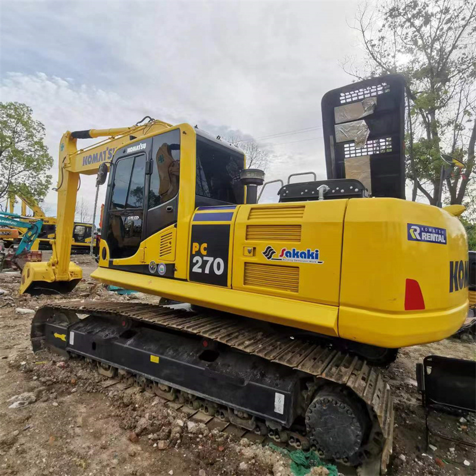

Refurbished Komatsu PC270 Excavator
The Komatsu PC270 is a powerful and durable hydraulic crawler excavator, designed for tough construction, mining, and earthmoving projects. It is known for its exceptional performance, fuel efficiency, and ease of operation. Whether you are a contractor, a fleet manager, or an operator, choosing a refurbished Komatsu PC270 can provide significant cost savings without sacrificing performance.
Honestly, it's almost impossible to buy a brand new excavator from China. They either don't exist or are made in China. If a Chinese seller tells you their Caterpillar/Komatsu/Volvo/Kobelco/Hitachi is brand new, they're lying. Therefore, a refurbished excavator is your best bet.

Here are the detailed specifications for a refurbished Komatsu PC270LC-8 excavator:
Operating Weight and Dimensions
- Operating Weight: 27,000–28,000 kg
- Overall Length: ~10.6–10.9 meters
- Overall Width: ~3.0–3.2 meters
- Overall Height: ~3.2–3.3 meters
- Tail Swing Radius: ~3.2–3.4 meters
- Ground Clearance: ~470–500 mm
- Track Width: 600–700 mm standard
Engine and Powertrain
- Engine Model: Komatsu SAA6D107E-1 (Tier 3 compliant)
- Rated Power Output: ~185–195 hp (138–145 kW) @ 2,000 rpm
- Maximum Torque: ~850–900 Nm
- Fuel Tank Capacity: ~400–450 liters
- Travel Speed: 3.4–5.5 km/h
- Swing Speed: ~10 rpm
- Gradeability: Up to 70% (35°)
Hydraulic System
- Main Pump Type: Closed Center Load Sensing (CLSS) axial piston pumps
- Flow Rate: ~2 × 240–260 L/min
- System Pressure: Up to 34.3 MPa
- Hydraulic Oil Capacity: ~250–280 liters
- Boom Cylinder Bore: ~140 mm
- Arm Cylinder Bore: ~120 mm
- Bucket Cylinder Bore: ~110 mm
Performance Metrics
- Bucket Capacity: 1.2–1.6 m³ (SAE heaped)
- Max Digging Depth: ~7.2–7.5 meters
- Max Reach (Horizontal): ~10.5–10.8 meters
- Max Dump Height: ~7.0–7.3 meters
- Bucket Digging Force: ~180–190 kN
- Arm Digging Force: ~140–150 kN
Cab and Operator Features
- Cab Type: ROPS/FOPS certified
- Display: LCD monitor with diagnostics and fuel tracking
- Controls: Electro-hydraulic joysticks with customizable sensitivity
- Comfort: Air suspension seat, climate control, low vibration cab
- Visibility: Rear-view camera, LED work lights, wide glass area
Smart Features and Efficiency
- Fuel Efficiency: Electronic engine control + auto idle shutdown
- Emissions Control: Tier 3 compliant (no DPF or SCR)
- Telematics Ready: KOMTRAX system for remote diagnostics and fleet tracking
- Attachment Memory: Preset hydraulic settings for multiple tools
Attachments Compatibility
- Standard Bucket: 1.2–1.6 m³
- Optional Tools: Hydraulic breaker, demolition shear, compactor, ripper
- Quick Coupler: Hydraulic or manual options available
Refurbishment Scope
Refurbished PC270 units typically include:
- Engine Overhaul: Turbocharger, injectors, seals, cooling system
- Hydraulic Restoration: Pump recalibration, valve block testing, hose replacement
- Electrical Diagnostics: Monitor, sensors, wiring harness
- Cab Reconditioning: Seat, joysticks, HVAC, repainting
- Structural Repairs: Boom/bucket welding, bushing replacement, undercarriage rebuild
Overview of the Komatsu PC270 Excavator
The Komatsu PC270 is part of Komatsu’s renowned series of hydraulic excavators, offering a balance of power, precision, and durability. Designed to handle a wide range of tasks, including digging, lifting, grading, and material handling, the PC270 is capable of performing in the most demanding work environments.
Key Specifications of the Komatsu PC270 Excavator
-
Operating Weight: Approximately 26,500 kg (58,400 lbs)
-
Engine Power: 130 kW (175 hp)
-
Max Digging Depth: 6.7 meters (22 feet)
-
Max Reach: 9.9 meters (32.5 feet)
-
Bucket Capacity: 1.1 to 1.5 cubic meters
-
Travel Speed: 5.4 km/h (3.4 mph)
The Komatsu PC270 is a medium-to-heavy-duty excavator, ideal for applications that require both power and versatility, whether in construction, landscaping, or roadwork.
Key Features of the Komatsu PC270 Excavator
Powerful and Efficient Engine
The Komatsu PC270 is equipped with a 175-hp (130 kW) engine, delivering exceptional power to handle a wide range of heavy-duty tasks. The engine’s efficiency allows the machine to perform well under load while maintaining fuel economy.
-
Fuel Efficiency: The engine is designed to optimize fuel consumption, which reduces operating costs over time.
-
Emissions-Compliant: The engine adheres to the latest environmental standards, making it eco-friendly and reducing harmful emissions on the job site.
Advanced Hydraulic System
The PC270 is equipped with an advanced hydraulic system designed to improve productivity and reduce operational costs. This system ensures efficient power delivery for various functions, including digging, lifting, and grading.
-
Load-Sensing Hydraulics: The machine automatically adjusts hydraulic power to optimize performance and fuel efficiency, ensuring consistent operation under varying load conditions.
-
Smooth and Precise Control: The hydraulic system is designed to provide precise control of the boom, arm, and bucket, allowing for more accurate and efficient work.
Durable Undercarriage
The Komatsu PC270 features a rugged undercarriage designed to handle challenging terrain and harsh working conditions. This contributes to the machine's stability and durability during operation.
-
Heavy-Duty Undercarriage: The machine is built with a durable undercarriage capable of withstanding tough job sites, from rough construction areas to muddy and soft grounds.
-
Long-Term Stability: The reinforced undercarriage provides exceptional stability, allowing the machine to perform without compromising on safety or efficiency.
Operator Comfort and Safety
Komatsu places a significant emphasis on operator comfort and safety, and the PC270 is designed to provide an ergonomic workspace for the operator. This increases productivity while ensuring the safety of the operator throughout the day.
-
Ergonomic Cabin: The cabin of the PC270 is spacious, with adjustable seats, air conditioning, and easy-to-use controls, reducing operator fatigue during long working hours.
-
Safety Features: The PC270 is equipped with safety features such as ROPS (Roll-Over Protective Structure), anti-slip platforms, and rearview cameras, ensuring a secure working environment for operators.
Why Choose a Refurbished Komatsu PC270 Excavator?
Opting for a refurbished Komatsu PC270 offers several advantages. Let’s explore the key reasons why purchasing a refurbished unit is a smart investment.
Cost-Effective Solution
One of the primary reasons to consider a refurbished Komatsu PC270 is the cost savings. Purchasing a new PC270 can be expensive, but a refurbished model allows businesses to access the same high-quality equipment at a fraction of the price.
-
Lower Purchase Price: A refurbished PC270 can cost anywhere from 30% to 50% less than a new one, depending on the model year, condition, and market factors.
-
Financing Options: Many dealers offer financing options for refurbished models, allowing businesses to make the purchase without impacting their cash flow significantly.
Thorough Refurbishment Process
When purchasing a refurbished Komatsu PC270, the machine has undergone a thorough inspection and repair process, ensuring that all major components—such as the engine, hydraulics, and undercarriage—are in excellent working condition.
-
Engine Overhaul: The engine is fully inspected, and any worn or damaged parts are replaced to restore its original performance.
-
Hydraulic System Restoration: The hydraulic system is tested for leaks, pressure inconsistencies, and performance issues, with any necessary repairs or part replacements performed.
-
Undercarriage and Track Inspection: The undercarriage is checked for wear and tear, ensuring the tracks, rollers, and sprockets are in good condition.
Long-Term Durability and Reliability
Komatsu is known for building durable and reliable machinery, and the PC270 is no exception. A refurbished machine, when properly maintained, can provide many years of dependable service.
-
Proven Durability: The Komatsu PC270 has a long track record of performance across various industries, from construction to mining, ensuring its long-term reliability.
-
Longevity: With regular maintenance and care, a refurbished PC270 can continue to perform well for many years, minimizing downtime and maximizing productivity.
Sustainability and Environmental Benefits
By opting for a refurbished Komatsu PC270, businesses contribute to sustainability by reducing waste and conserving resources.
-
Reduced Waste: Refurbishing machines allows existing equipment to be reused, reducing the need for raw materials and decreasing overall waste from manufacturing.
-
Eco-Friendly Option: Refurbished machinery often uses recycled parts, reducing the demand for new manufacturing and conserving energy resources.
Maintenance Tips for the Komatsu PC270 Excavator
To ensure the Komatsu PC270 continues to perform optimally, regular maintenance is essential. Below are some key maintenance tips:
Engine and Hydraulics
-
Regular Oil Changes: Replace the engine oil and hydraulic fluid at the recommended intervals to ensure the engine and hydraulic systems remain in peak condition.
-
Filter Replacement: Regularly replace engine and hydraulic filters to maintain system cleanliness and prevent clogging.
Undercarriage and Tracks
-
Track Inspections: Check the tracks for wear and replace any worn components to ensure proper traction and stability.
-
Lubrication: Regularly lubricate the undercarriage components to reduce friction and wear, prolonging the life of the tracks and rollers.
Cabin and Comfort Features
-
Interior Cleaning: Keep the cabin clean and free from debris to ensure the safety and comfort of the operator.
-
Test Safety Features: Regularly check the safety systems, such as cameras and sensors, to ensure they are working properly.
Conclusion
The Komatsu PC270 is a highly capable, reliable, and versatile excavator, designed to handle a wide range of construction, mining, and earthmoving tasks. A refurbished Komatsu PC270 offers an affordable way to acquire a high-performance machine, delivering the same power and reliability as a new unit at a fraction of the price.
By choosing a refurbished PC270, businesses can benefit from significant cost savings, while still enjoying the durability and performance Komatsu is known for. With proper maintenance and care, a refurbished Komatsu PC270 can continue to perform efficiently for many years, making it a smart investment for any heavy equipment fleet.
Our Commitment
- 2 years / 4000 hours warranty.
- EPA certified.
- No sweatshop labor.
Contacts

- [email protected]
- Youtube Instagram Facebook
- Navigation: G206 (Sishu Bridge) in Changfeng County, Hefei City, Anhui Province, 200 meters north to the east